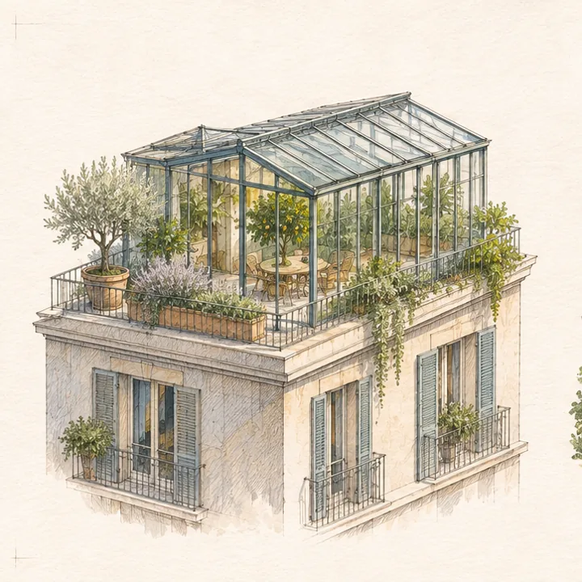
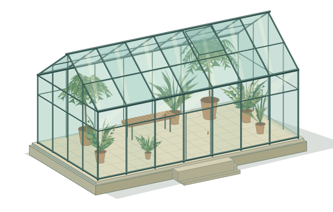
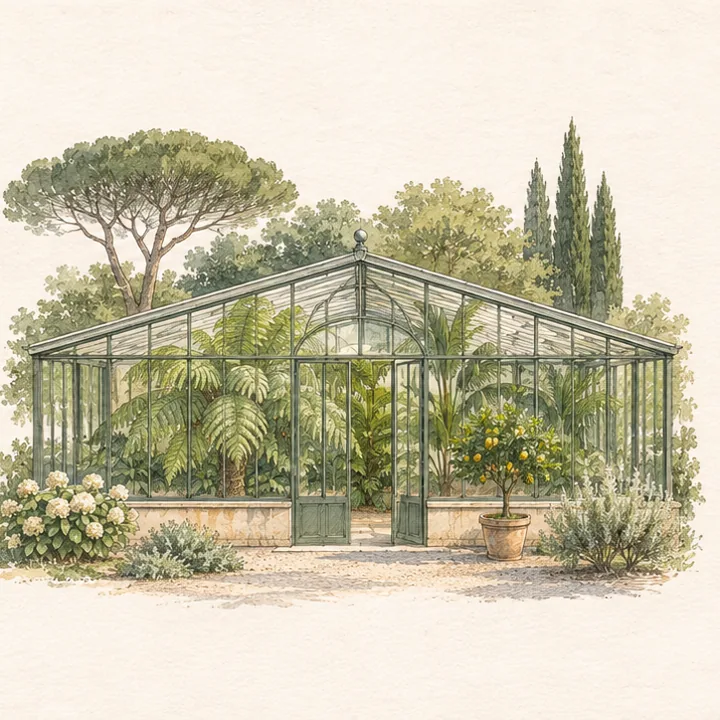
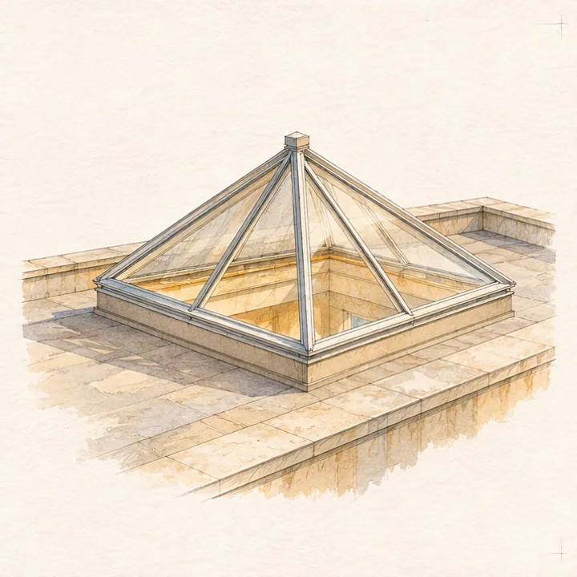

Сад на крышеСад на 26 этаже
ALUTECH ALT F50
Проектируем и строим оранжереи, веранды и сады на крышах. Наше производство — в Чехове.

Три типа конструкций в эскизах. В паспортах проектов — площадь, профиль и фотографии готовых работ.
Все 80 работ
Сад на крышеALUTECH ALT F50

Оранжерея«Сиал» КП-50К и КПТ-74

Зенитный фонарьALUTECH ALT F50
Каркас несёт нагрузку, а стеклопакет опирается на уплотнение. В кровле мастерская использует закалённое стекло и триплекс.
Подробнее об остекленииАлюминиевый каркас передаёт нагрузку на основание сада.
Эластичная прокладка отделяет стекло от металла.
Кровельный пакет ложится на уплотнение.
Планка прижимает край пакета к профилю.
Отдельная постройка или продолжение дома с тёплым алюминиевым профилем.
Стационарное или раздвижное остекление для сезонного и круглогодичного использования.
Тамбуры и светопрозрачные входы для жилых домов, магазинов и офисов.
Остекление над помещением, где дневной свет нужен сверху.
Ставка зависит от общей площади и от того, какая часть приходится на крышу. За открывающиеся изделия идёт отдельная доплата.
КП-50К «Сиал» · без открывающихся изделий
Проверяем основание, примыкание к дому и доступ для монтажа. Уточняем назначение сада и размеры.
Подбираем профиль и стеклопакеты, прорабатываем открывания. Готовый проект можно адаптировать к участку.
Готовим элементы на производстве в Чехове, привозим каркас и стеклопакеты и собираем конструкцию на месте.
Материалы мастерской о том, как устроить сад и подобрать условия для растений.
Каждый кадр открывается на сайте мастерской в отдельной вкладке.
Расскажите, где будет сад, как вы хотите им пользоваться и какие размеры уже известны.
Ежедневно с 9:00 до 22:00
Москва, Старопименовский переулок, д. 18, офис 1
Это демоформа. Данные остаются на этой странице. Сообщение в мастерскую не отправляется, реальная заявка не создаётся.
Вы проверили исходные данные. Чтобы обсудить сад с мастерской, воспользуйтесь её телефоном или почтой.